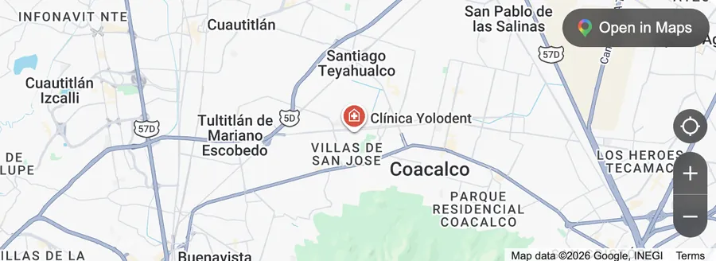
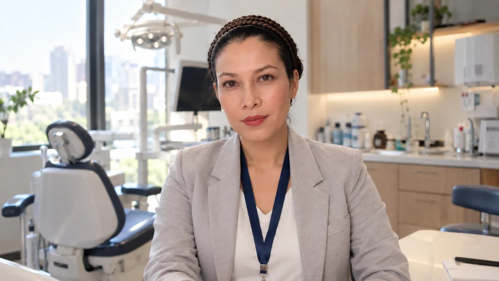
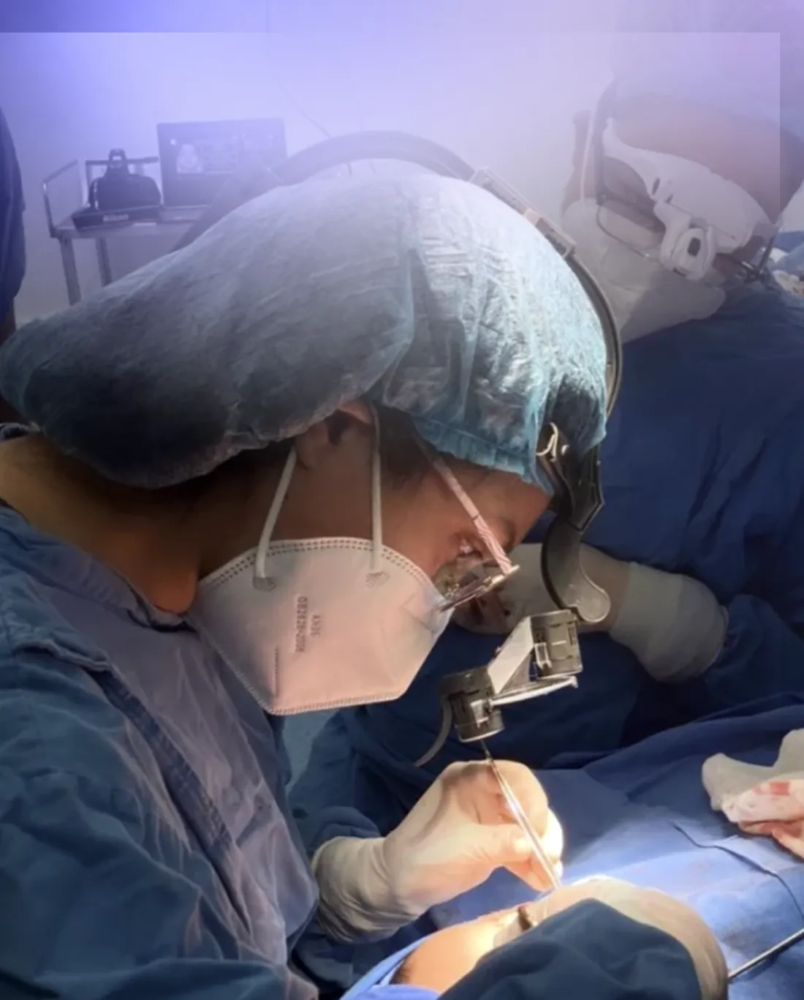
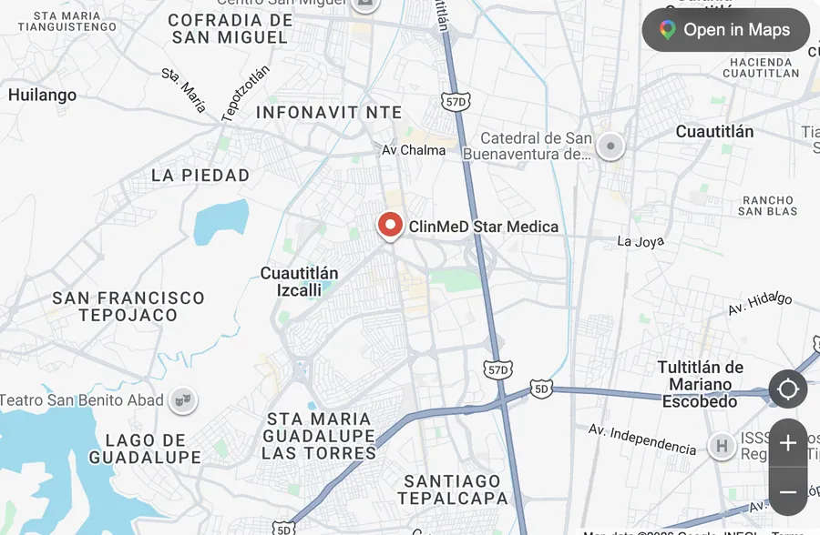
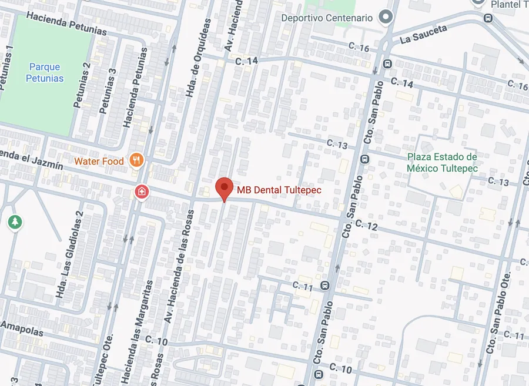

Tlalnepantla y Tultitlán
Clínica Yolodent
Terceros molares complejos, patología oral y cirugía bucal.
Diagnóstico certero y tratamientos avanzados para devolverte la función, la armonía facial y tu tranquilidad.


La Dra. Yadheli Sánchez Pérez combina una sólida formación académica en la Universidad Nacional Autónoma de México (UNAM) y el Hospital Juárez de México con una vocación orientada al bienestar integral de cada paciente.
Actualmente se desempeña como docente y encargada del área quirúrgica de Labio y Paladar Hendido en el Hospital Pediátrico de Peralvillo en la Ciudad de México. Su práctica clínica se distingue por un enfoque empático, claro y resolutivo: cada intervención se planea a detalle para brindar procedimientos seguros, mínimamente invasivos y con una recuperación predecible.
Explicaciones claras sobre tu caso antes de cualquier procedimiento.
Protocolos modernos con anestesia local o sedación consciente.
Resultados armónicos que preservan y optimizan tu salud bucal y facial.
Soluciones diseñadas para resolver dolor, corregir anomalías anatómicas y potenciar la armonía de tu rostro.
Retiro seguro de terceros molares retenidos, impactados o en posiciones complejas adyacentes al nervio, con mínima inflamación y recuperación asistida.
Corrección de discrepancias en maxilar y mandíbula para optimizar la mordida, despejar la vía aérea, aliviar la articulación temporomandibular y equilibrar el perfil facial.
Detección, evaluación y tratamiento oportuno de lesiones, quistes o alteraciones en tejidos blandos y huesos de la boca y cuello.
Manejo especializado y acompañamiento quirúrgico reconstructivo de secuelas y fisuras orofaciales.
Atención integral de fracturas óseas y reparación estética de heridas o cicatrices faciales.
Rehabilitación de piezas dentales perdidas mediante colocación de implantes y procedimientos de injerto óseo previo.
Diagnóstico y tratamiento para chasquidos, dolor mandibular, bruxismo y tensión miofascial.
Alternativas dentales y quirúrgicas para despejar el flujo respiratorio nocturno y mejorar tu calidad de vida.
Proyección o remodelación del mentón para lograr proporciones equilibradas acordes a tu estructura ósea.
Extracción controlada de bolsas de Bichat y liposucción de cuello para una definición mandibular limpia.
Aplicación médica para tratar dolor miofascial/bruxismo y suavizar líneas de expresión faciales.
Procedimientos cosméticos faciales mínimamente invasivos orientados a la naturalidad.
Avalada por el Consejo Mexicano de Cirugía Oral y Maxilofacial, garantizando actualización continua.
Experiencia constante en resolución de casos de alta complejidad quirúrgica y pediátrica.
Sin tecnicismos confusos: sabrás exactamente qué esperar antes, durante y después del tratamiento.
Procedimientos libres de estrés y ansiedad, con monitoreo seguro para tu tranquilidad.
Consulta privada disponible en puntos estratégicos de la Ciudad de México y Estado de México.

Terceros molares complejos, patología oral y cirugía bucal.

Diagnóstico integral, cirugía maxilofacial y reconstructiva.

Agenda tu cita de valoración y recibe un plan de tratamiento personalizado adaptado a tus necesidades funcionales y estéticas.
Chatear por WhatsApp para AgendarConsulta previa cita · consulta disponibilidad de fechas y sedes.